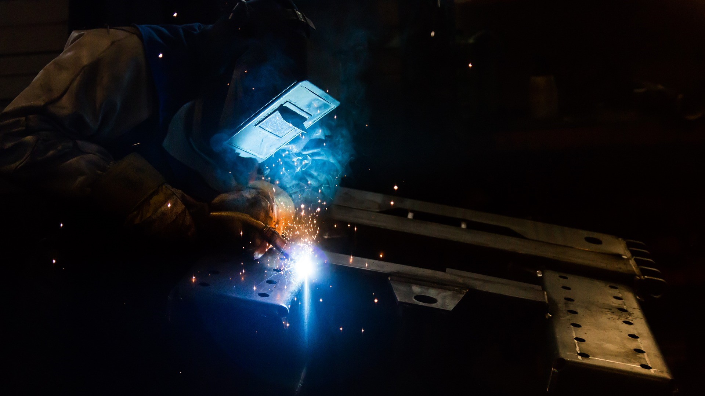
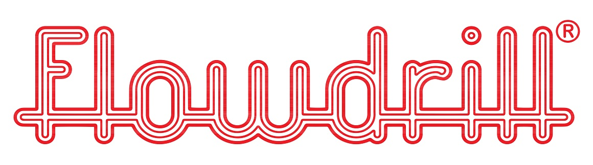

Home
Activiteiten
(current)
Certificaten
Realisaties
Contact
BBMP biedt u volgende mogelijkheden.
Activiteit
Detail
Lassen
TIG AC/DC, MIG-MAG, stiftlassen en puntlassen
Zagen
Lintzaag (automatisch of manueel)
CNC bewerkingen
Draadtappen en frezen
Boren
Boren en vloeiboren
Slijpen
Slijpen en polieren


BBMP is officiële verdeler voor België van Flowdrill vloeiboren en rolvormtappen.
Spaanloos proces, vervangt nietmoeren, lasmoeren en inserts
Geschikt voor ronde en vierkante buis, profielen en plaatmateriaal
De gevormde bus heeft een lengte van 3 maal de materiaaldikte
Kerngatdiameter van 1,8 tot 46 mm
Materiaaldikte van 0,7 tot 12 mm
Geschikt voor staal, RVS, legeringen, messing, koper en aluminium
Meer info op
www.flowdrill.com